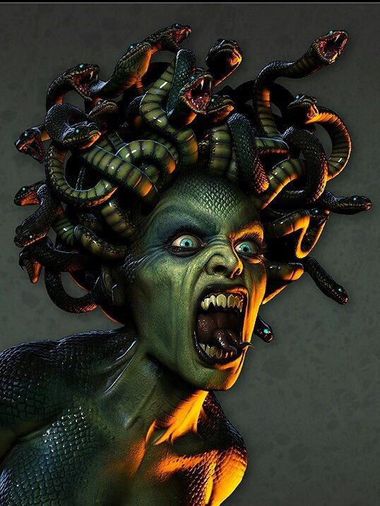
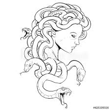

Биография
История персонажа
Древнегреческая мифология отразилась на культуре: древние живописцы изображали богов, чудовищ и
титанов
масляными красками на холсте, а скульпторы вытачивали героев из мрамора. Современные творцы продолжают
восхищаться культурой жителей юго-восточного государства. И, конечно же, устрашающая Медуза Горгона до сих
пор продолжает вдохновлять художников и режиссеров на новые подвиги.
История появления
Медуза – это одна из сестер Горгон, чудовищ, у которых вместо волос были ядовитые змеи. В
поздней версии
мифа, которую передал Овидий в произведении под названием «Метаморфозы», причиной появления мистических
существ стала Афина.
Дело в том, что разгневанная богиня организованной войны превратила Медузу и ее сестер в чудовищ после того,
как повелитель морских волн, обратившийся в птицу, овладел Медузой в храме богини – там Медуза укрывалась от
преследований Посейдона. До «перевоплощения» Медуза была привлекательной девушкой с красивыми волосами.

Миф
Горгона Медуза — наиболее известная из трёх сестёр горгон, чудовище с женским лицом и змеями
вместо
волос. Взгляд на её лицо обращал человека в камень. Была убита Персеем. Упомянута в «Одиссее» (XI 634).
Своё имя морская медуза получила из-за сходства с шевелящимися волосами-змеями легендарной горгоны Медузы
из
греческой мифологии.
Голова Медузы
И в отрубленном состоянии взгляд на голову (лицо) горгоны сохранял способность превращать живых
существ в
камень. Персей воспользовался головой Медузы в бою с Кето (Кито) — драконоподобным морским чудовищем (и
матерью горгон), которое было послано Посейдоном опустошать Эфиопию. Показав лик Медузы Кето, Персей
превратил её в камень и спас Андромеду, царскую дочь, которую предназначили в жертву Кето. Перед этим он
превратил в камень титана Атланта, поддерживающего небесный свод неподалёку от острова горгон, и тот
превратился в гору Атлас в современном Марокко.
Позднее Персей таким же образом обратил в камень царя Полидекта и его прислужников, преследовавших Данаю,
мать Персея. Затем голова Медузы была помещена на эгиду Афины («на грудь Афины») — в искусстве эту голову
было принято изображать на доспехах на плече богини или под ключицами на её груди.
По Павсанию, её голова лежит в земляном холме около площади Аргоса. Циклопы изготовили голову Медузы из
мрамора и установили у храма Кефиса в Аргосе.

Смерть Медузы
Одним из заданий, данных Персею царём Полидектом, было убийство горгоны Медузы. Справиться с
чудовищем
герою
помогли боги — Афина и Гермес. По их совету перед тем, как отправиться в бой, он посетил вещих старух —
сестёр грай (которые были также Форкидами, сёстрами горгон), имевших на троих один глаз и один зуб.
Хитростью Персей похитил у них зуб и глаз, а вернул лишь в обмен на крылатые сандалии, волшебный мешок и
шапку-невидимку Аида. Грайи показали Персею путь к горгонам. Гермес подарил ему острый кривой нож.
Вооружившись этим подарком, Персей прибыл к горгонам. Поднявшись в воздух на крылатых сандалиях, он смог
отрубить голову смертной Медузе, одной из трёх сестёр горгон, смотря в отражение на полированном медном
щите
Афины — ведь непосредственный, прямой взгляд на лицо Медузы обращал всё живое в камень. От сестёр Медузы
Персей скрылся с помощью шапки-невидимки, спрятав трофей в заплечную сумку.
Толкование
Согласно рационалистическому истолкованию, она была дочерью царя Форка и
царствовала
над народом у озера
Тритониды, водила ливийцев на войну, но ночью была изменнически убита. Карфагенский писатель Прокл
называет
её дикой женщиной из Ливийской пустыни. По другому истолкованию, была гетерой, влюбилась в Персея и
истратила свою молодость и состояние.